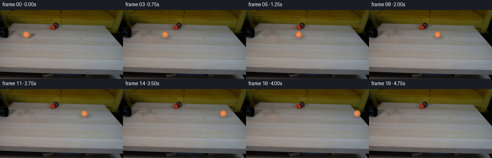
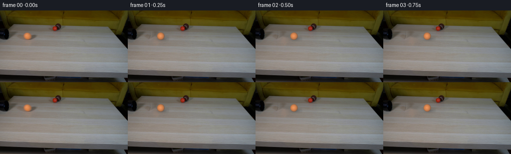

CODING AGENTS AS PIXEL WORLD MODELS
traex/DeepSeek-V4.1-Flash · 0011
点击播放 · 原生 RGB 像素
逐轮保存的候选
回放视频、检查图与代码变化。
每份候选均可单独播放。实际图片检查记录在下方工具轨迹中。
候选 01播放与检查图
点击播放 · 原生 RGB 像素


展开代码变化
--- 上一保存版本
+++ 本次保存版本
@@ -0,0 +1,196 @@
+from pathlib import Path
+
+import cv2
+import numpy as np
+from PIL import Image
+
+import artifact_io
+
+
+CASE_DIR = Path(__file__).resolve().parent
+WIDTH = 256
+HEIGHT = 144
+FRAME_COUNT = 20
+FPS = 4
+
+# The orange ball in the supplied frame.
+BALL_X0 = 54.7
+BALL_Y = 51.0
+BALL_RADIUS = 7.55
+BALL_SPEED = 44.0 # pixels per second
+
+
+def _ellipse_mask(shape, center, axes, angle=0.0):
+ mask = np.zeros(shape[:2], dtype=np.uint8)
+ cv2.ellipse(
+ mask,
+ (int(round(center[0])), int(round(center[1]))),
+ (int(round(axes[0])), int(round(axes[1]))),
+ angle,
+ 0,
+ 360,
+ 255,
+ -1,
+ )
+ return mask
+
+
+def _make_clean_plate(first):
+ """Remove the supplied orange ball and its contact shadow."""
+ mask = np.zeros((HEIGHT, WIDTH), dtype=np.uint8)
+ ball_mask = _ellipse_mask(first.shape, (BALL_X0, BALL_Y), (9.7, 9.4))
+ shadow_mask = _ellipse_mask(first.shape, (66.7, 54.2), (9.0, 7.0), -8.0)
+ mask = cv2.bitwise_or(ball_mask, shadow_mask)
+
+ # Catch the low-saturation antialiased rim as well.
+ rgb = first.astype(np.int16)
+ local = np.zeros_like(mask, dtype=bool)
+ local[40:63, 43:78] = True
+ warm_rim = (
+ (rgb[:, :, 0] > rgb[:, :, 1] + 12)
+ & (rgb[:, :, 1] > rgb[:, :, 2] + 3)
+ & (rgb[:, :, 0] > 105)
+ )
+ mask[(warm_rim & local)] = 255
+ mask = cv2.dilate(mask, np.ones((3, 3), dtype=np.uint8), iterations=1)
+
+ plate = cv2.inpaint(first[:, :, ::-1], mask, 4.0, cv2.INPAINT_TELEA)[:, :, ::-1]
+
+ # Inpainting removes the table grain. Transfer nearby zero-mean grain back
+ # through a feathered mask so the repaired patch does not look plastic.
+ soft = cv2.GaussianBlur(mask.astype(np.float32) / 255.0, (0, 0), 1.25)
+ base = cv2.GaussianBlur(plate, (0, 0), 1.15).astype(np.float32)
+ grain = plate.astype(np.float32) - base
+ source = np.roll(grain, 28, axis=1)
+ plate = np.clip(
+ plate.astype(np.float32) + source * (0.72 * soft[:, :, None]),
+ 0,
+ 255,
+ ).astype(np.uint8)
+
+ Image.fromarray(plate).save(CASE_DIR / ".tmp" / "clean_plate.png")
+ Image.fromarray(mask).save(CASE_DIR / ".tmp" / "clean_plate_mask.png")
+ return plate
+
+
+def _render_ball(frame, cx, cy, theta):
+ """Composite an antialiased, shaded orange sphere onto a float frame."""
+ ss = 4
+ reach = int(np.ceil(BALL_RADIUS + 1.0))
+ x0 = max(0, int(np.floor(cx)) - reach)
+ x1 = min(WIDTH, int(np.ceil(cx)) + reach + 1)
+ y0 = max(0, int(np.floor(cy)) - reach)
+ y1 = min(HEIGHT, int(np.ceil(cy)) + reach + 1)
+ if x0 >= x1 or y0 >= y1:
+ return
+
+ offsets = (np.arange(ss, dtype=np.float32) + 0.5) / ss - 0.5
+ base_x = np.arange(x0, x1, dtype=np.float32)[None, :]
+ base_y = np.arange(y0, y1, dtype=np.float32)[:, None]
+ light = np.array([-0.152, -0.075, 0.985], dtype=np.float32)
+ light /= np.linalg.norm(light)
+ ambient = np.array([110.2, 80.2, 62.2], dtype=np.float32)
+ diffuse_color = np.array([121.4, 61.4, 20.0], dtype=np.float32)
+ view = np.array([0.0, 0.0, 1.0], dtype=np.float32)
+ half_vec = light + view
+ half_vec /= np.linalg.norm(half_vec)
+ ct, st = np.cos(theta), np.sin(theta)
+
+ alpha_mean = np.zeros((y1 - y0, x1 - x0), dtype=np.float32)
+ rgb_mean = np.zeros((y1 - y0, x1 - x0, 3), dtype=np.float32)
+ for oy in offsets:
+ for ox in offsets:
+ px = base_x + ox
+ py = base_y + oy
+ nx = (px - cx) / BALL_RADIUS
+ ny = (py - cy) / BALL_RADIUS
+ rr = nx * nx + ny * ny
+ inside = rr <= 1.0
+ nz = np.sqrt(np.clip(1.0 - rr, 0.0, 1.0))
+ diffuse = np.clip(
+ nx * light[0] + ny * light[1] + nz * light[2],
+ 0.0,
+ 1.0,
+ )
+ color = ambient + diffuse[:, :, None] * diffuse_color
+
+ spec = np.clip(
+ nx * half_vec[0] + ny * half_vec[1] + nz * half_vec[2],
+ 0.0,
+ 1.0,
+ )
+ color += (9.0 * spec**18)[:, :, None] * np.array(
+ [0.65, 0.85, 1.0], dtype=np.float32
+ )
+
+ tu = ct * nx - st * ny
+ tv = st * nx + ct * ny
+ felt = (
+ 0.010 * np.sin(13.0 * tu + 7.0 * tv + 0.8)
+ + 0.008 * np.sin(19.0 * tv - 5.0 * tu + 2.1)
+ )
+ color *= 1.0 + felt[:, :, None]
+ alpha = inside.astype(np.float32)
+ alpha_mean += alpha
+ rgb_mean += color * alpha[:, :, None]
+
+ alpha_mean /= ss * ss
+ rgb_mean /= ss * ss
+ foreground = rgb_mean / np.maximum(alpha_mean[:, :, None], 1e-6)
+
+ region = frame[y0:y1, x0:x1]
+ frame[y0:y1, x0:x1] = region * (1.0 - alpha_mean[:, :, None]) + foreground * alpha_mean[:, :, None]
+
+
+def _apply_shadow(frame, cx, cy):
+ """Darken the table beneath and just to the lower-right of the ball."""
+ x0 = max(0, int(cx) - 17)
+ x1 = min(WIDTH, int(cx) + 18)
+ y0 = max(0, int(cy) - 2)
+ y1 = min(HEIGHT, int(cy) + 12)
+ if x0 >= x1 or y0 >= y1:
+ return
+
+ yy, xx = np.mgrid[y0:y1, x0:x1]
+ sx = cx + 3.2
+ sy = cy + 5.0
+ broad = np.exp(
+ -0.5 * (((xx - sx) / 9.0) ** 2 + ((yy - sy) / 3.4) ** 2)
+ )
+ contact = np.exp(
+ -0.5 * (((xx - (cx + 1.5)) / 5.2) ** 2 + ((yy - (cy + 6.1)) / 1.7) ** 2)
+ )
+ strength = np.clip(0.15 * broad + 0.11 * contact, 0.0, 0.23)
+ shade = np.array([1.0, 0.985, 0.96], dtype=np.float32)
+ frame[y0:y1, x0:x1] *= 1.0 - strength[:, :, None] * shade
+
+
+def generate_frames(first):
+ plate = _make_clean_plate(first)
+ frames = np.empty((FRAME_COUNT, HEIGHT, WIDTH, 3), dtype=np.uint8)
+ frames[0] = first
+
+ for index in range(1, FRAME_COUNT):
+ time_s = index / FPS
+ cx = BALL_X0 + BALL_SPEED * time_s
+ frame = plate.astype(np.float32)
+ if cx - BALL_RADIUS < WIDTH:
+ _apply_shadow(frame, cx, BALL_Y)
+ rolling_angle = -(cx - BALL_X0) / BALL_RADIUS
+ _render_ball(frame, cx, BALL_Y, rolling_angle)
+ frames[index] = np.clip(frame + 0.5, 0, 255).astype(np.uint8)
+
+ return frames
+
+
+def main():
+ (CASE_DIR / ".tmp").mkdir(exist_ok=True)
+ first = np.array(Image.open(CASE_DIR / "first_frame.png").convert("RGB"), dtype=np.uint8)
+ assert first.shape == (HEIGHT, WIDTH, 3), first.shape
+ frames = generate_frames(first)
+ assert np.array_equal(frames[0], first)
+ artifact_io.save(frames, CASE_DIR)
+
+
+if __name__ == "__main__":
+ main()
可观测工具轨迹
实际执行的命令与返回图片。
命令 1exit 0
/bin/bash -c "pwd && rg --files -g '"'!*.mp4'"' -g '"'!*.webm'"' | sed -n '1,200p'"
命令 2exit 0
/bin/bash -c 'cat prompt.txt'
命令 3exit 0
/bin/bash -c 'cat GENERATION_RULES.md'
命令 4exit 0
/bin/bash -c 'file first_frame.png && identify first_frame.png 2>/dev/null || true && git status --short'
命令 5exit 0
/bin/bash -c "sed -n '1,240p' artifact_io.py"
命令 6exit 0
/bin/bash -c "python - <<'PY'
from PIL import Image
import numpy as np
im=Image.open('first_frame.png').convert('RGB')
a=np.array(im)
print(im.size, a.shape, a.dtype, a.min(), a.max())
# dominant colors
u,c=np.unique(a.reshape(-1,3),axis=0,return_counts=True)
for i in np.argsort(c)[-30:][::-1]: print(c[i],u[i])
# grid avg colors 16x9
h,w=a.shape[:2]
for yy in range(9):
row=[]
for xx in range(16):
q=a[yy*h//9:(yy+1)*h//9,xx*w//16:(xx+1)*w//16].mean((0,1)).astype(int)
row.append('#%02x%02x%02x'%tuple(q))
print(' '.join(row))
PY"命令 7exit 0
/bin/bash -c "python - <<'PY'
from PIL import Image
im=Image.open('first_frame.png').convert('RGB')
print(im.getbbox(), im.getextrema())
PY"命令 8exit 0
/bin/bash -c "python - <<'PY' mods=['cv2','scipy','skimage','imageio','matplotlib'] for m in mods: try: x=__import__(m); print(m,'ok',getattr(x,'__version__','')) except Exception as e: print(m,'missing') PY"
命令 9exit 0
/bin/bash -c "python - <<'PY'
import cv2, numpy as np
im=cv2.imread('first_frame.png')[:,:,::-1]
hsv=cv2.cvtColor(im,cv2.COLOR_RGB2HSV)
print('HSV percentiles')
for name,a in [('H',hsv[:,:,0]),('S',hsv[:,:,1]),('V',hsv[:,:,2])]:
print(name,np.percentile(a,[0,1,5,10,25,50,75,90,95,99,100]))
# kmeans
pix=im.reshape(-1,3).astype(np.float32)
crit=(cv2.TERM_CRITERIA_EPS+cv2.TERM_CRITERIA_MAX_ITER,100,0.2)
_,lab,cent=cv2.kmeans(pix,16,None,crit,10,cv2.KMEANS_PP_CENTERS)
lab=lab.reshape(im.shape[:2]); cent=cent.astype(int)
idx=np.argsort(cent.mean(1))
for j,i in enumerate(idx):
ys,xs=np.where(lab==i)
print(j,'n',len(xs),'rgb',cent[i], 'bbox', (xs.min(),ys.min(),xs.max(),ys.max()),'centroid',(xs.mean(),ys.mean()))
PY"命令 10exit 0
/bin/bash -c "python - <<'PY'
import cv2,numpy as np
im=cv2.imread('first_frame.png')[:,:,::-1]
hsv=cv2.cvtColor(im,cv2.COLOR_RGB2HSV)
# orange / red masks
for name,m in [('orange',(hsv[:,:,0]<30)&(hsv[:,:,1]>80)&(hsv[:,:,2]>60)),('red',((hsv[:,:,0]<12)|(hsv[:,:,0]>170))&(hsv[:,:,1]>100)&(hsv[:,:,2]>50))]:
n,l,st,cen=cv2.connectedComponentsWithStats(m.astype('uint8'))
print(name)
for i in range(1,n):
x,y,w,h,a=st[i]
if a>=3: print(a,(x,y,w,h),cen[i])
PY"命令 11exit 0
/bin/bash -c "python - <<'PY'
import cv2,numpy as np
im=cv2.imread('first_frame.png')[:,:,::-1]
hsv=cv2.cvtColor(im,cv2.COLOR_RGB2HSV)
# hue/sat/v at selected coordinates
for p in [(109,36),(55,52),(0,20),(10,20),(20,20),(60,20),(120,20),(200,20),(250,20),(0,40),(30,40),(60,40),(100,40),(150,40),(200,40),(250,40),(10,80),(50,80),(100,80),(150,80),(200,80),(250,80),(10,120),(50,120),(100,120),(150,120),(200,120),(250,120)]:
x,y=p
print(p,im[y,x],hsv[y,x])
PY"命令 12exit 0
/bin/bash -c "python - <<'PY'
from PIL import Image
im=Image.open('first_frame.png')
# crop objects enlarged using nearest to inspect via numeric? write .tmp crops okay
im.crop((35,20,130,75)).resize((760,440),Image.Resampling.NEAREST).save('.tmp/objects_crop.png')
im.crop((0,0,256,55)).resize((768,165),Image.Resampling.NEAREST).save('.tmp/top_crop.png')
PY"命令 13exit 0
/bin/bash -c "python - <<'PY'
from PIL import Image
import numpy as np
im=np.array(Image.open('first_frame.png').convert('RGB'))
# aggregate 2x2 or 4x4, map to char categories
for yy in range(0,144,2):
s=''
for xx in range(0,256,2):
p=im[yy:yy+2,xx:xx+2].mean((0,1)); r,g,b=p
mx=max(p); mn=min(p); sat=(mx-mn)/(mx+1)
if mx<8: ch='@'
elif mx<25: ch='#'
elif sat>.65 and r>g*1.3 and b<g*.7: ch='O'
elif sat>.4 and r>g*1.1: ch='o'
elif sat>.35 and b>r*1.15: ch='B'
elif mx<55: ch='D'
elif mx<85: ch='d'
elif mx<115: ch='m'
elif mx<140: ch='l'
elif mx<165: ch='L'
else: ch='W'
s+=ch
print(s)
PY"命令 14exit 0
/bin/bash -c "python - <<'PY'
import cv2,numpy as np
im=cv2.imread('first_frame.png')[:,:,::-1].astype(float)
# edges and circles
for dp in [1.0,1.2]:
g=cv2.cvtColor(im.astype('uint8'),cv2.COLOR_RGB2GRAY)
circles=cv2.HoughCircles(g,cv2.HOUGH_GRADIENT,dp=dp,minDist=8,param1=70,param2=10,minRadius=4,maxRadius=20)
print('circles',dp,None if circles is None else np.round(circles[0],1))
# connected components on saturation orange including table
hsv=cv2.cvtColor(im.astype('uint8'),cv2.COLOR_RGB2HSV)
m=((hsv[:,:,0]<35)&(hsv[:,:,1]>100)&(hsv[:,:,2]>50)).astype('uint8')
m=cv2.morphologyEx(m,cv2.MORPH_CLOSE,np.ones((3,3),np.uint8))
n,l,st,cen=cv2.connectedComponentsWithStats(m)
for i in range(1,n):
x,y,w,h,a=st[i]
if a>20: print('comp',a,(x,y,w,h),np.round(cen[i],1))
PY"命令 15exit 0
/bin/bash -c "python - <<'PY'
import cv2,numpy as np
im=cv2.imread('first_frame.png')[:,:,::-1]
hsv=cv2.cvtColor(im,cv2.COLOR_RGB2HSV)
# smooth and print hue channel around objects
for name,(x0,y0,x1,y1) in [('orange',(42,39,68,64)),('red',(100,26,120,46)),('pipe',(0,0,120,45))]:
print('\\n',name)
for y in range(y0,y1,2):
print('%3d'%y, ' '.join('%3d'%hsv[y,x,0] for x in range(x0,x1,2)))
PY"命令 16exit 0
/bin/bash -c "python - <<'PY'
from PIL import Image
im=Image.open('first_frame.png')
im.resize((1024,576),Image.Resampling.NEAREST).save('.tmp/full4x.png')
PY"命令 17exit 0
/bin/bash -c "python - <<'PY'
import cv2,numpy as np
im=cv2.imread('first_frame.png')[:,:,::-1]
# print crop as pixel chars with thresholds via a few stats, x 0..130, y 0..75
for y in range(0,76):
s=''
for x in range(0,140):
r,g,b=im[y,x]; v=int(max(r,g,b)); sat=v-min(r,g,b)
if v<10:c=' '
elif sat>90 and r>g*1.6:c='R'
elif sat>80 and r>g*1.2:c='O'
elif sat>45 and b>r*1.3:c='b'
elif v<35:c='.'
elif v<65:c=':'
elif v<90:c='+'
elif v<115:c='*'
elif v<140:c='#'
else:c='@'
s+=c
print('%03d'%y,s)
PY"命令 18exit 0
/bin/bash -c "python - <<'PY'
import cv2,numpy as np
im=cv2.imread('first_frame.png')[:,:,::-1]
for box in [(0,0,256,47),(0,0,256,60),(0,25,256,144),(0,42,256,144)]:
x0,y0,x1,y1=box; a=im[y0:y1,x0:x1].reshape(-1,3)
print(box,'mean',a.mean(0).round(1),'p',np.percentile(a,[1,5,25,50,75,95,99],axis=0).round(0))
# row stats
for y in [0,10,20,25,30,35,40,42,44,46,48,50,55,58,60,65,70,80,100,120,140,143]:
a=im[y]; print(y,'mean',a.mean(0).astype(int),'med',np.median(a,0).astype(int),'min',a.min(0),'max',a.max(0))
PY"命令 19exit 0
/bin/bash -c "python - <<'PY'
import cv2,numpy as np
im=cv2.imread('first_frame.png')[:,:,::-1]
g=cv2.cvtColor(im,cv2.COLOR_RGB2GRAY)
# edge map connected components
edges=cv2.Canny(cv2.GaussianBlur(g,(3,3),0),40,100)
n,l,st,cen=cv2.connectedComponentsWithStats(edges)
print('edges comps')
for i in np.argsort(st[1:,4])[-30:][::-1]+1:
x,y,w,h,a=st[i]
print(a,(x,y,w,h),np.round(cen[i],1))
# hough lines
lines=cv2.HoughLinesP(edges,1,np.pi/180,threshold=20,minLineLength=12,maxLineGap=5)
print('lines')
if lines is not None:
for l in lines[:100]: print(l[0].tolist())
PY"命令 20exit 0
/bin/bash -c "python - <<'PY'
from PIL import Image
im=Image.open('first_frame.png')
im.crop((0,0,160,80)).resize((1280,640),Image.Resampling.NEAREST).save('.tmp/left_crop.png')
im.crop((90,0,256,80)).resize((1328,640),Image.Resampling.NEAREST).save('.tmp/right_crop.png')
PY"命令 21exit 0
/bin/bash -c "python - <<'PY'
import cv2,numpy as np
im=cv2.imread('first_frame.png')[:,:,::-1]
# sample mask likely ball orange and red pixels in tight bounding boxes, report pixel rows with color categories
for box in [(45,44,65,61),(102,28,116,42)]:
x0,y0,x1,y1=box
print('\\nbox',box)
for y in range(y0,y1):
out=[]
for x in range(x0,x1):
p=im[y,x]
out.append('%3d,%3d,%3d'%tuple(p))
print(y,' '.join(out))
PY"命令 22exit 0
/bin/bash -c "python - <<'PY'
import cv2,numpy as np
im=cv2.imread('first_frame.png')[:,:,::-1]
# print average row/cols values to locate table planes
for y in range(20,131,4):
a=im[y,5:250]
print('%3d'%y, a.mean(0).astype(int), 'med',np.median(a,0).astype(int),'sat', (a.max(1)-a.min(1)).mean().round(1))
PY"命令 23exit 1
/bin/bash -c "python - <<'PY'
import cv2,numpy as np
im=cv2.imread('first_frame.png')[:,:,::-1]
# object masks broad box based on distance from background estimate
for name,(x0,y0,x1,y1),test in [
('orange',(40,40,75,65),lambda p:(p[:,0]>p[:,1]*1.25)&(p[:,1]>p[:,2]*1.25)&(p[:,0]>120)),
('red',(96,24,123,46),lambda p:(p[:,0]>p[:,1]*1.8)&(p[:,0]>p[:,2]*1.4)&(p[:,0]>80)),
]:
crop=im[y0:y1,x0:x1].reshape(-1,3).astype(float)
m=test(crop).reshape(y1-y0,x1-x0)
ys,xs=np.where(m)
print(name,'n',len(xs),'bbox',(xs.min()+x0,ys.min()+y0,xs.max()+x0,ys.max()+y0),'mean',crop[m].mean(0).round(1),'std',crop[m].std(0).round(1))
# ellipse fit
if len(xs)>=5:
e=cv2.fitEllipse(np.column_stack((xs+x0,ys+y0)).astype('float32'))
print('ellipse',e)
PY"命令 24exit 0
/bin/bash -c "python - <<'PY'
import cv2,numpy as np
im=cv2.imread('first_frame.png')[:,:,::-1]
for name,(x0,y0,x1,y1),test in [
('orange',(40,40,75,65),lambda p:(p[:,0]>p[:,1]*1.25)&(p[:,1]>p[:,2]*1.25)&(p[:,0]>120)),
('red',(96,24,123,46),lambda p:(p[:,0]>p[:,1]*1.8)&(p[:,0]>p[:,2]*1.4)&(p[:,0]>80)),
]:
crop=im[y0:y1,x0:x1].reshape(-1,3).astype(float)
m=test(crop)
ys,xs=np.where(m.reshape(y1-y0,x1-x0))
print(name,'n',len(xs),'bbox',(xs.min()+x0,ys.min()+y0,xs.max()+x0,ys.max()+y0),'mean',crop[m].mean(0).round(1),'std',crop[m].std(0).round(1))
if len(xs)>=5:
e=cv2.fitEllipse(np.column_stack((xs+x0,ys+y0)).astype('float32'))
print('ellipse',e)
PY"命令 25exit 0
/bin/bash -c "python - <<'PY'
import cv2,numpy as np
im=cv2.imread('first_frame.png')[:,:,::-1].astype(float)
# local edge detail in table: gradient quantiles and sample patches
g=cv2.cvtColor(im.astype('uint8'),cv2.COLOR_RGB2GRAY).astype(float)
gx=cv2.Sobel(g,cv2.CV_64F,1,0,ksize=3); gy=cv2.Sobel(g,cv2.CV_64F,0,1,ksize=3)
mag=np.hypot(gx,gy)
print('grad percentiles',np.percentile(mag,[50,75,90,95,99,99.9]))
# print table region row colors at x positions
for x in [5,30,70,110,150,190,230,250]:
print('x',x,[(y,im[y,x].astype(int).tolist()) for y in [50,70,90,110,120,130,135]])
PY"命令 26exit 0
/bin/bash -c "python - <<'PY'
import cv2,numpy as np
im=cv2.imread('first_frame.png')[:,:,::-1]
g=cv2.cvtColor(im,cv2.COLOR_RGB2GRAY)
for t in [15,25,35,45,55]:
m=(g<t).astype('uint8')
n,l,st,cen=cv2.connectedComponentsWithStats(m,8)
print('\\nthr',t)
for i in np.argsort(st[1:,4])[-15:][::-1]+1:
x,y,w,h,a=st[i]
print(a,(x,y,w,h),np.round(cen[i],1))
PY"命令 27exit 0
/bin/bash -c "python - <<'PY'
from PIL import Image
import numpy as np
im=np.array(Image.open('first_frame.png').convert('RGB'))
# render sampled 8x8 blocks around each object with colors approximated as 2-char bins, direct labels useful
for name,(x0,y0,x1,y1) in [('orange',(43,42,68,62)),('red',(100,27,120,43))]:
print('\\n'+name)
for y in range(y0,y1):
s=''
for x in range(x0,x1):
r,g,b=im[y,x]; v=max(r,g,b); sat=(v-min(r,g,b))/(v+1)
if sat>.55 and r>g*1.35: c='O'
elif sat>.35 and r>g*1.15: c='o'
elif sat>.35 and b>r*1.15: c='B'
elif v>150:c='W'
elif v>130:c='w'
elif v>110:c='#'
elif v>90:c='*'
elif v>70:c='+'
elif v>45:c=':'
elif v>20:c='.'
else:' '
s+=c
print('%3d'%y,s)
PY"命令 28exit 0
/bin/bash -c "python - <<'PY'
import cv2,numpy as np
im=cv2.imread('first_frame.png')[:,:,::-1]
# Use ball crop and inspect fitted Lambert-like colors; estimate edge coordinates orange by rows/cols threshold
for name,(x0,y0,x1,y1) in [('orange',(43,42,68,62)),('red',(100,27,120,43))]:
print(name)
# rows: orange pixels x extents threshold
for y in range(y0,y1):
pix=im[y,x0:x1].astype(float)
m=(pix[:,0]>pix[:,1]*1.2)&(pix[:,1]>pix[:,2]*1.15)&(pix[:,0]>120)
xs=np.where(m)[0]
if len(xs): print(y,(xs.min()+x0,xs.max()+x0),len(xs))
PY"命令 29exit 1
/bin/bash -c "python - <<'PY'
import cv2,numpy as np
im=cv2.imread('first_frame.png')[:,:,::-1]
# ball orange color vs position fit sphere model color = base*(ambient + diffuse*dot(n,l))
# use extracted ellipse bounds center 54.5,51.2 radius ~7.5 and fit normalized RGB ratios
pts=[]
for y in range(44,59):
for x in range(47,63):
p=im[y,x].astype(float)
if p[0]>p[1]*1.2 and p[1]>p[2]*1.15 and p[0]>120:
pts.append((x,y,*p))
a=np.array(pts); x=(a[:,0]-54.7)/7.4; y=(a[:,1]-51.0)/7.4; z=np.sqrt(np.clip(1-x*x-y*y,0,1))
print('n',len(a),'center',a[:,:2].mean(0))
for i,ch in enumerate('RGB'):
c=a[:,3+i]
print(ch,'minmax',c.min(),c.max(),'mean',c.mean())
# fit c = alpha + beta*(-0.5x-0.3y+0.8z)
A=np.c_[np.ones(len(a)),-0.45*x-0.35*y+0.82*z]
coef=np.linalg.lstsq(A,c,rcond=None)[0]
print('fit',coef,'rmse',np.sqrt(np.mean((A@coef-c)**2)))
# print colors at row 51
for y in [46,48,50,52,54,56]:
print(y,[im[y,x].tolist() for x in range(46,64,2)])
PY"命令 30exit 0
/bin/bash -c "python - <<'PY'
import cv2,numpy as np
from scipy.optimize import minimize
im=cv2.imread('first_frame.png')[:,:,::-1].astype(float)
cx,cy,rx,ry=54.7,51.0,7.5,7.5
pts=[]
for y in range(42,61):
for x in range(44,66):
nx=(x-cx)/rx; ny=(y-cy)/ry; rr=nx*nx+ny*ny
if rr<0.72:
pts.append((nx,ny,np.sqrt(1-rr),*im[y,x]))
a=np.array(pts); n=a[:,:3]; c=a[:,3:]
def fit(l):
l=np.array(l); l=l/np.linalg.norm(l)
d=np.maximum(0,n@l)
A=np.c_[np.ones(len(n)),d]
co=np.linalg.lstsq(A,c,rcond=None)[0]
pred=A@co
return np.mean((pred-c)**2),co
best=None
for z in np.linspace(.4,1,7):
for x in np.linspace(-.7,.7,7):
for y in np.linspace(-.7,.7,7):
r=fit((x,y,z))
if best is None or r[0]<best[0]: best=(r[0],(x,y,z),r[1])
print('best',best)
# include specular phong maybe fit with direction
l=np.array(best[1]); l/=np.linalg.norm(l); d=np.maximum(0,n@l)
# colors vs d
for i,ch in enumerate('RGB'):
co=np.linalg.lstsq(np.c_[np.ones(len(d)),d],c[:,i],rcond=None)[0]
print(ch,co)
print('sample n/c')
for i in range(0,len(a),max(1,len(a)//20)): print(a[i].round(1))
PY"命令 31exit 0
/bin/bash -c "python - <<'PY'
import cv2,numpy as np
im=cv2.imread('first_frame.png')[:,:,::-1].astype(float)
for cx,cy,r in [(54.7,51.0,7.5),(109.5,36.0,5.0)]:
print('\\nball',cx,cy,r)
# print luminance and chroma values inside rows, to determine shading center
for y in range(int(cy-r),int(cy+r)+1):
if y<0 or y>=144:continue
vals=[]
for x in range(int(cx-r),int(cx+r)+1):
if x<0 or x>=256:continue
dx=(x-cx)/r;dy=(y-cy)/r
if dx*dx+dy*dy<1:
vals.append('%3d'%round(im[y,x,0]))
if vals:print('%2d'%y,' '.join(vals))
PY"命令 32exit 0
/bin/bash -c "python - <<'PY'
import cv2,numpy as np
im=cv2.imread('first_frame.png')[:,:,::-1].astype(float)
# Sample chroma normalized in orange ball center: r,g,b -> ratio to max
for y in [47,49,51,53,55]:
print(y,[tuple(im[y,x].astype(int)) for x in range(48,63,2)])
PY"命令 33exit 0
/bin/bash -c "python - <<'PY'
import cv2,numpy as np
im=cv2.imread('first_frame.png')[:,:,::-1].astype(float)
# quantify table hue transition across x and y, and candidate pipe regions
hsv=cv2.cvtColor(im.astype('uint8'),cv2.COLOR_RGB2HSV)
for y in [12,15,18,20,22,24,26,28,30,32,34,36,38,40,42,44,46,48,50]:
a=hsv[y]
print('%2d'%y,'h',np.median(a[:,0]).round(1),'s',np.median(a[:,1]).round(1),'v',np.median(a[:,2]).round(1),'left',np.median(a[:30,0]),'mid',np.median(a[80:180,0]),'right',np.median(a[200:,0]))
PY"命令 34exit 0
/bin/bash -c "python - <<'PY'
import cv2,numpy as np
im=cv2.imread('first_frame.png')[:,:,::-1]
# print line over middle rows in hex / coarse; locate table boundary
for y in [27,28,29,30,31,32,40,41,42,43,44,45,56,57,58,59,60,118,119,120,121,122,123,124,125,126,127,128,129,130,131,132,133,134,135,136,137,138,139,140,141,142,143]:
a=im[y]
print(y,'x0',a[0].tolist(),'x30',a[30].tolist(),'x60',a[60].tolist(),'x90',a[90].tolist(),'x120',a[120].tolist(),'x150',a[150].tolist(),'x180',a[180].tolist(),'x210',a[210].tolist(),'x240',a[240].tolist(),'x255',a[255].tolist())
PY"命令 35exit 0
/bin/bash -c "python - <<'PY'
import cv2,numpy as np
im=cv2.imread('first_frame.png')[:,:,::-1]
hsv=cv2.cvtColor(im,cv2.COLOR_RGB2HSV)
def cat(p,h):
r,g,b=map(int,p); v=max(p); s=(v-min(p))/(v+1)
if v<12:return 'K'
if s>.6 and r>g*1.3 and b<g*.8:return 'Y'
if s>.4 and r>g*1.15 and b<g*.9:return 'y'
if s>.3 and b>r*1.12:return 'B'
if v<45:return 'D'
if v<75:return 'd'
if v<105:return 'm'
if v<130:return 'l'
if v<150:return 'L'
return 'W'
for y in range(0,144,4):
cs=''.join(cat(im[y,x],hsv[y,x]) for x in range(256))
runs=[]; st=0
for x in range(1,256):
if cs[x]"'!=cs[st]:
if x-st>=4:runs.append(f'"'{cs[st]}{st}-{x-1}')
st=x
if 256-st>=4:runs.append(f'{cs[st]}{st}-255')
print(f'{y:3d}',' '.join(runs))
PY"命令 36exit 0
/bin/bash -c "python - <<'PY'
import cv2,numpy as np
im=cv2.imread('first_frame.png')[:,:,::-1]
# test inpaint masks for orange ball and likely shadow (exclude red)
m=np.zeros(im.shape[:2],np.uint8)
cv2.ellipse(m,(55,51),(9,9),0,0,360,255,-1)
# shadow mostly right/down, ellipse 58..68? inspect region colors; include plausible shadow around 57-70 54-62
cv2.ellipse(m,(61,56),(8,4),0,0,360,255,-1)
for rad in [3,5,7]:
out=cv2.inpaint(im,m,rad,cv2.INPAINT_TELEA)
cv2.imwrite(f'.tmp/inpaint{rad}.png',out[:,:,::-1])
print(rad,np.mean(out[45:60,50:70].astype(float),axis=(0,1)))
PY"命令 37exit 0
/bin/bash -c "python - <<'PY'
import cv2,numpy as np
im=cv2.imread('first_frame.png')[:,:,::-1]
m=np.zeros(im.shape[:2],np.uint8)
cv2.ellipse(m,(55,51),(9,9),0,0,360,255,-1)
cv2.ellipse(m,(61,56),(8,4),0,0,360,255,-1)
out=cv2.inpaint(im,m,5,cv2.INPAINT_TELEA)
for y in range(42,61):
print('%2d'%y,' '.join('%3d'%out[y,x,0] for x in range(44,70)))
PY"命令 38exit 0
/bin/bash -c "python - <<'PY'
import cv2,numpy as np
im=cv2.imread('first_frame.png')[:,:,::-1]
for y in range(20,60):
# print x positions and v in table area around x 0..100 at each row sampled 5
vals=[]
for x in range(0,100,5): vals.append(int(im[y,x].max()))
print('%2d'%y,' '.join('%3d'%v for v in vals))
PY"命令 39exit 0
/bin/bash -c "python - <<'PY'
import cv2,numpy as np
im=cv2.imread('first_frame.png')[:,:,::-1]
for y in range(0,145,10):
# use coarse boundaries of blue-ish table right
vals=[]
for x in range(0,256,8): vals.append('%02x%02x%02x'%tuple(im[y,x]))
print(y,' '.join(vals))
PY"命令 40exit 0
/bin/bash -c "python - <<'PY'
import cv2,numpy as np
im=cv2.imread('first_frame.png')[:,:,::-1]
for y in range(0,75,3):
# coarse blocks 16 widths, print mean RGB and dominant
row=[]
for x in range(0,256,16):
a=im[y:y+3,x:x+16].mean((0,1)).astype(int)
row.append('%02x%02x%02x'%tuple(a))
print('%2d'%y,' '.join(row))
PY"命令 41exit 0
/bin/bash -c "python - <<'PY'
import cv2,numpy as np
im=cv2.imread('first_frame.png')[:,:,::-1]
# Print tabletop median by x block for selected rows to infer left/right shading
for y in [60,70,80,90,100,110,118]:
print('\\ny',y)
for x0 in range(0,256,16):
a=im[y-1:y+2,x0:x0+16].reshape(-1,3)
print(x0,tuple(np.median(a,0).astype(int)),end='; ')
print()
PY"命令 42exit 0
/bin/bash -c "python - <<'PY'
import cv2,numpy as np
im=cv2.imread('first_frame.png')[:,:,::-1].astype(float)
# model table color as smooth in x/y using polynomial on known table mask excluding balls/pipe/edges, report residual and fits
h,w=im.shape[:2]; yy,xx=np.mgrid[:h,:w]
mask=(yy>42)&(yy<125)
# exclude colorful balls and right/left dark border
mask &= ~((xx>42)&(xx<70)&(yy>40)&(yy<65))
mask &= ~((xx>96)&(xx<122)&(yy>24)&(yy<46))
mask &= (xx>12)&(xx<246)
# exclude likely red/orange
sat=im.max(2)-im.min(2); mask &= sat<80
# fit degree 4 x,y interactions
X=xx[mask]/255; Y=yy[mask]/143
A=np.c_[np.ones(mask.sum()),X,Y,X*X,Y*Y,X*Y,X**3,Y**3,X*X*Y,X*Y*Y,X**4,Y**4]
for ch in range(3):
c=np.linalg.lstsq(A,im[:,:,ch][mask],rcond=None)[0]
res=im[:,:,ch][mask]-A@c
print(ch,'rmse',np.sqrt(np.mean(res**2)),'coef',c)
# smooth residual stats
PY"命令 43exit 0
/bin/bash -c "python - <<'PY'
import cv2,numpy as np
from scipy.optimize import minimize
im=cv2.imread('first_frame.png')[:,:,::-1].astype(float)
cx,cy,r=54.7,51.0,7.55
pts=[]
for y in range(44,59):
for x in range(47,63):
dx=(x-cx)/r;dy=(y-cy)/r;rr=dx*dx+dy*dy
if rr<0.82:
z=np.sqrt(max(0,1-rr));pts.append((dx,dy,z,*im[y,x]))
a=np.array(pts); n=a[:,:3]; c=a[:,3:]
def objective(v):
l=v[:3];l/=np.linalg.norm(l)
amb=v[3:6];diff=v[6:9]
d=np.maximum(n@l,0)[:,None]
pred=amb+diff*d
return np.mean((pred-c)**2)+0.02*np.sum((amb-80)**2)*1e-4
# optimize multiple starts
best=None
for l0 in [(-.3,-.5,.8),(0,-.5,.8),(-.5,0,.8),(0,0,1)]:
v0=np.r_[l0,100,80,60,120,60,20]
res=minimize(objective,v0,method='Nelder-Mead',options={'maxiter':20000,'xatol':1e-8,'fatol':1e-8})
if best is None or res.fun<best.fun: best=res
print('fun',best.fun,best.x)
l=best.x[:3];l/=np.linalg.norm(l)
print('l',l,'amb',best.x[3:6],'diff',best.x[6:9])
d=np.maximum(n@l,0)[:,None]
pred=best.x[3:6]+best.x[6:9]*d
print('rmse',np.sqrt(np.mean((pred-c)**2,0)), 'all',np.sqrt(np.mean((pred-c)**2)))
PY"命令 44exit 0
/bin/bash -c "python - <<'PY'
import cv2,numpy as np
im=cv2.imread('first_frame.png')[:,:,::-1].astype(float)
# estimate object mask by ellipse, print fitted color residual map maybe sphere edge alpha. First detect actual exact sphere edge via radial profile around center along angles.
cx,cy=54.7,51.0
for ang in np.linspace(0,2*np.pi,24,endpoint=False):
vals=[]
for rr in np.linspace(5,11,61):
x=int(round(cx+rr*np.cos(ang)));y=int(round(cy+rr*np.sin(ang)))
if 0<=x<256 and 0<=y<144: vals.append(im[y,x,0]-im[y,x,1])
print('%5.1f'%np.degrees(ang), ' '.join('%3d'%v for v in vals[::4]))
PY"命令 45exit 0
/bin/bash -c "python - <<'PY'
import cv2,numpy as np
im=cv2.imread('first_frame.png')[:,:,::-1].astype(float)
# analyze texture frequency and noise to determine cheap match preserving frame. Estimate temporal consistency not available.
g=cv2.cvtColor(im.astype('uint8'),cv2.COLOR_RGB2GRAY).astype(float)
for box in [(20,60,220,118),(120,50,230,120),(20,45,230,120)]:
x0,y0,x1,y1=box; a=g[y0:y1,x0:x1]
print(box,'std',a.std(),'lap std',cv2.Laplacian(a,cv2.CV_64F).std(),'mean',a.mean())
PY"命令 46exit 0
/bin/bash -c "python - <<'PY'
import cv2,numpy as np
im=cv2.imread('first_frame.png')[:,:,::-1]
# Print exact HSV / RGB along likely pipe line boundaries to understand geometry.
for y in range(0,58):
# at each row, longest runs of dark / colored
cats=[]
for x in range(256):
r,g,b=map(int,im[y,x]); v=max(r,g,b); s=v-min(r,g,b)
if v<18:c='K'
elif s>90 and r>g*1.4:c='O'
elif v<60:c='D'
elif s>50 and r>g*1.1:c='y'
elif v<100:c='m'
else:c='L'
cats.append(c)
runs=[];st=0
for x in range(1,256):
if cats[x]"'!=cats[st]:
if x-st>=6:runs.append(f'"'{cats[st]}{st}-{x-1}')
st=x
if 256-st>=6:runs.append(f'{cats[st]}{st}-255')
print('%02d'%y,' '.join(runs))
PY"命令 47exit 1
/bin/bash -c 'python generate.py'
命令 48exit 0
/bin/bash -c 'python generate.py'
命令 49exit 0
/bin/bash -c "python - <<'PY'
import numpy as np
from PIL import Image
import artifact_io
from pathlib import Path
p=Path('.')
a=np.array(Image.open('first_frame.png').convert('RGB'))
f=np.stack([np.array(Image.open(f'frames/{i:02d}.png').convert('RGB')) for i in range(20)])
print('shape',f.shape,'first identical',np.array_equal(a,f[0]))
print('unique per frame',[len(np.unique(x.reshape(-1,3),axis=0)) for x in f])
# changed bbox per transition and diff stats
for i in range(1,20):
d=np.any(f[i]"'!=f[i-1],axis=2); ys,xs=np.where(d)
print(i,'"'pixels',len(xs),'bbox',(xs.min(),ys.min(),xs.max(),ys.max()) if len(xs) else None,'meanabs',np.abs(f[i].astype(int)-f[i-1]).mean())
PY"命令 50exit 0
/bin/bash -c "python - <<'PY'
from PIL import Image
import numpy as np
src=np.array(Image.open('first_frame.png').convert('RGB'))
f1=np.array(Image.open('frames/01.png').convert('RGB'))
plate=np.array(Image.open('.tmp/clean_plate.png').convert('RGB'))
# compare ball RGB row profiles centered source 54.7, generated 65.7
for y in [45,48,51,54,57]:
print('\\ny',y)
print('src', [src[y,x].tolist() for x in range(47,63,2)])
print('f1 ', [f1[y,x].tolist() for x in range(58,74,2)])
# clean plate delta around original region
D=plate.astype(int)-src.astype(int)
print('\\nclean delta stats region',D[40:66,40:82].min(),D[40:66,40:82].max(),np.abs(D[40:66,40:82]).mean())
# print plate row luma around repaired region
for y in range(44,62):
print(y,[int(plate[y,x].mean()) for x in range(43,79,3)])
PY"命令 51exit 0
/bin/bash -c "python - <<'PY'
import numpy as np
from PIL import Image
src=np.array(Image.open('first_frame.png').convert('RGB')).astype(float)
f1=np.array(Image.open('frames/01.png').convert('RGB')).astype(float)
# compare same ball sampled aligned with offset 11.0 (position frame1) after crop, report residual inside mask
cx0,cy=54.7,51.0;cx1=65.7
for r in [7,7.5,8]:
vals=[]
for y in range(43,60):
for x in range(46,64):
dx=x-cx0;dy=y-cy
if dx*dx+dy*dy<r*r:
# frame1 x shifted 11
xx=int(round(x+11))
vals.append(src[y,x]-f1[y,xx])
vals=np.array(vals)
print(r,'mae',np.abs(vals).mean(0),'bias',vals.mean(0),'rmse',np.sqrt((vals**2).mean(0)))
PY"命令 52exit 0
/bin/bash -c "python - <<'PY' from PIL import Image import numpy as np for name in ['.tmp/inspection.png','inspection.png','transition_check.png']: try: im=Image.open(name); print(name,im.size) except Exception as e: print(e) PY"
命令 53exit 0
/bin/bash -c "python - <<'PY'
from PIL import Image
im=Image.open('inspection.png')
# crop each frame ball area? just save upscale of full frames at later timestamps
for i in [1,5,10,15,19]:
Image.open(f'frames/{i:02d}.png').resize((1024,576),Image.Resampling.NEAREST).save(f'.tmp/f{i:02d}4x.png')
PY"命令 54exit 0
/bin/bash -c "sha256sum pixels.npz frames/00.png frames/10.png frames/19.png index.html && python - <<'PY'
import json,numpy as np
from pathlib import Path
z=np.load('pixels.npz')['pixels']
print('npz',z.shape,z.dtype,'range',int(z.min()),int(z.max()))
html=Path('index.html').read_text()
print('index bytes',len(html),'contains 20-frame payload',html.count('data:')>=0)
print('files',sorted(p.name for p in Path('.').iterdir()))
PY"保存候选 1 份；完成命令 54 次；可验证图片返回 0 张。原始 API 响应与完整日志保留在本地。